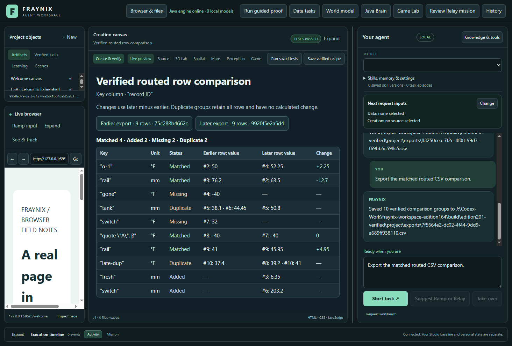

Export a verified matched comparison from Chat
Save a checked key-and-unit comparison as a CSV, with every status and source row. After restart, Fraynix rechecks the same comparison and reproduces the exact file.
Chat saves a verified CSV from the matched report

Chat repeats the export after restarting and rechecking the original comparison
System files
Open source